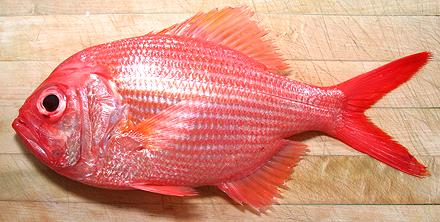

Golden Snapper

[Redfish (fishbase), Eastern Nannygai, Koarea; Centroberyx affinis]
Not actually a snapper, but related to the
Squirrelfish / Soldierfish, this fish
is found from northern Tasmania north to the central coast of
Australia, and also around New Zealand and New Caledonia. It can grow
to over 20 inches long and 4 pounds, but is commonly less than 16
inches. The photo specimen, from New Zealand, was 15 inches long and
weighed 1 pound 15-1/2 ounces. This fish is not considered threatened,
IUCN Red List rated NE (Not Evaluated). It is a commercially
exploited fish within its range.
More on Varieties of Fish
(very large page).
This fish is a bit of a hassle to deal with (it takes the class name
"bony fishes" seriously), but the flesh is bright white with an
outstanding mild flavor and good texture. It holds together well enough
for poaching but not for extended wet cooking. There is a thin darker
layer right under the skin along the centerline, but it's flavor is not
much stronger than the rest of the flesh. The skin cooks up a beautiful
bright red, but has considerable shrink. Keep it on if you can, perhaps
score in a diamond pattern for some methods of cooking.
Buying:
This is not at all a common fish here in
Southern California. The photo specimen was purchased at an Asian market
in Los Angeles (Alhambra, actually) for 2015 US $9.99 per pound,
definitely a premium priced fish.
Scales:
The scales are fairly large and very stiff with
strong adhesion. They scrape off rather hard, but with only moderate
flying about. You will have to pull some off with long nose pliers. There
is a row of sharp pointy scales between the pelvic (bottom) fins.
Cleaning:
This fish presents no unusual problems in
cleaning, but the gills pull very hard so need to be cut out with kitchen
shears. The esophagus is tough, so it will have to be cut as well. Handle
carefully, because it has quite a few prickly spines.
Fillet:
This is a reasonably easy fish to fillet, with
coherent bone and fin structure. I usually remove the head before
filleting. When you get to the rib cage, just cut the ribs away from the
backbone with kitchen shears and pull them from the fillet using long
nose pliers. They pull hard, but cleanly. There are a few substantial
centerline spines, long and sharp enough to be dangerous, but they are
are not easy to find and even harder to pull. Eat with care, in case
you missed one.
Skin:
The skin has no strong or "off" flavor, but
does have fairly strong shrink. It does weaken during cooking and fillets
can be pan fried skin-on if you press them flat after turning them skin
side down. This is easiest done if the fillets are cut in half along the
centerline. The skin is tough enough fillets can be skinned rather easily
using the standard long knife and cutting board
Method. Removed skins should be
added to the stock pot with the heads, fins and bones.
Yield:
A 1 pound 15-1/2 ounce fish yielded 15 ounces
of skin-on fillet (48%), and 14 ounces skinless (44%). Yield is a little
low due to the heavy head and bones, but do not discard them - see
Stock below
Stock:
The head, bones, fins and skins make one of
the best soup stocks you will ever taste. It is almost clear, but with
a moderate amount of clear oil. Remove this using your gravy separator. For
details see our Fish Stock
page.
sf_gsnapz 150314 - www.clovegarden.com
©Andrew Grygus - agryg@clovegarden.com - Photos
on this page not otherwise credited © cg1
- Linking to and non-commercial use of this page permitted